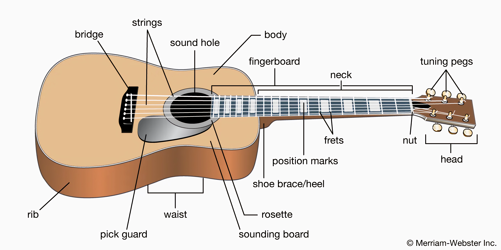
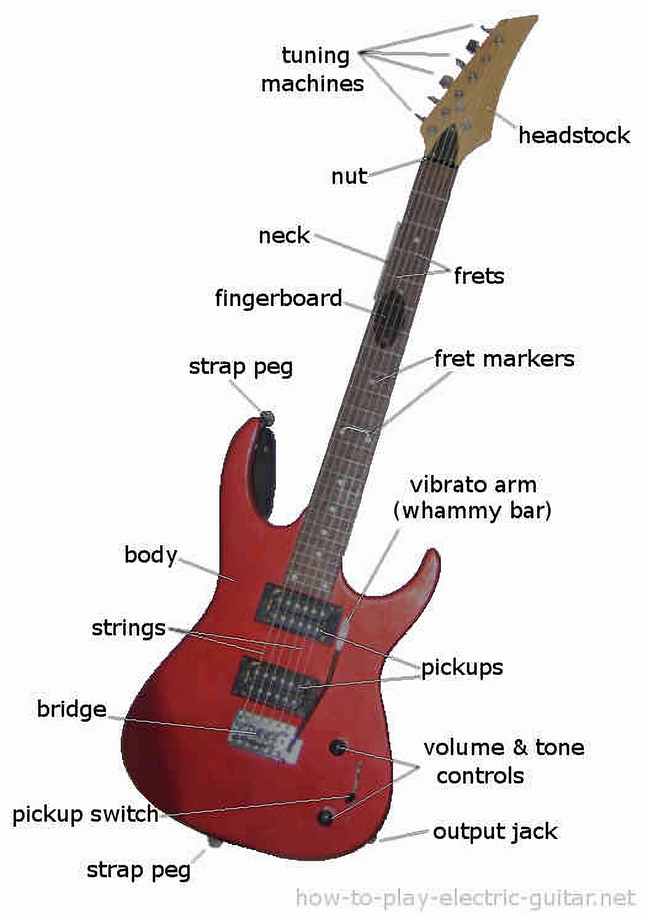
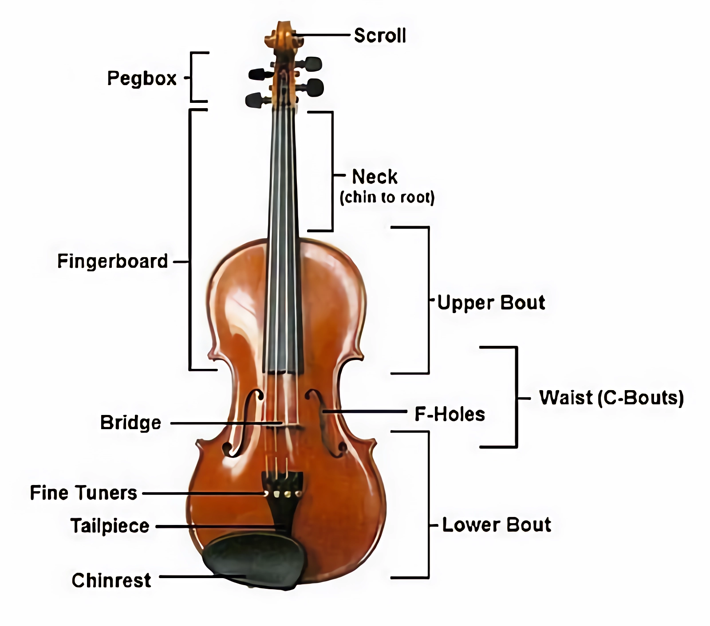

There is geometry in the humming of the strings, there is music in the spacing of spheres.
-Pythagoras
String instruments produce sound from one or more vibrating strings, which is either transferred to the air by the body of the instrument or in the case of electronically amplified instruments by a pickup.
Strings
Acoustic Guitar
The timbre of a guitar is determined by its body. Most people have never looked inside a guitar and may not realize it, but guitars are actually very cleverly designed.

Electric Guitar
Even though electricity is used to amplify the volume, the body and neck are merely pieces of wood. These instruments come in unique shapes and colors.

Violin
Whether performing an elegant solo or being the heart of the orchestra, the violin is a “star” in the music world.

Piano
The piano is a keyboard instrument that produces sound by striking strings with hammers, characterized by its large range and ability to play chords freely. It is a musical instrument that has broad appeal.